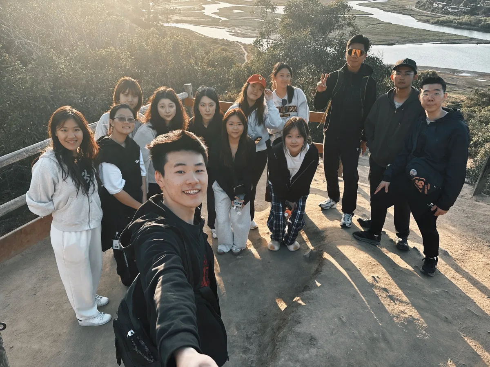
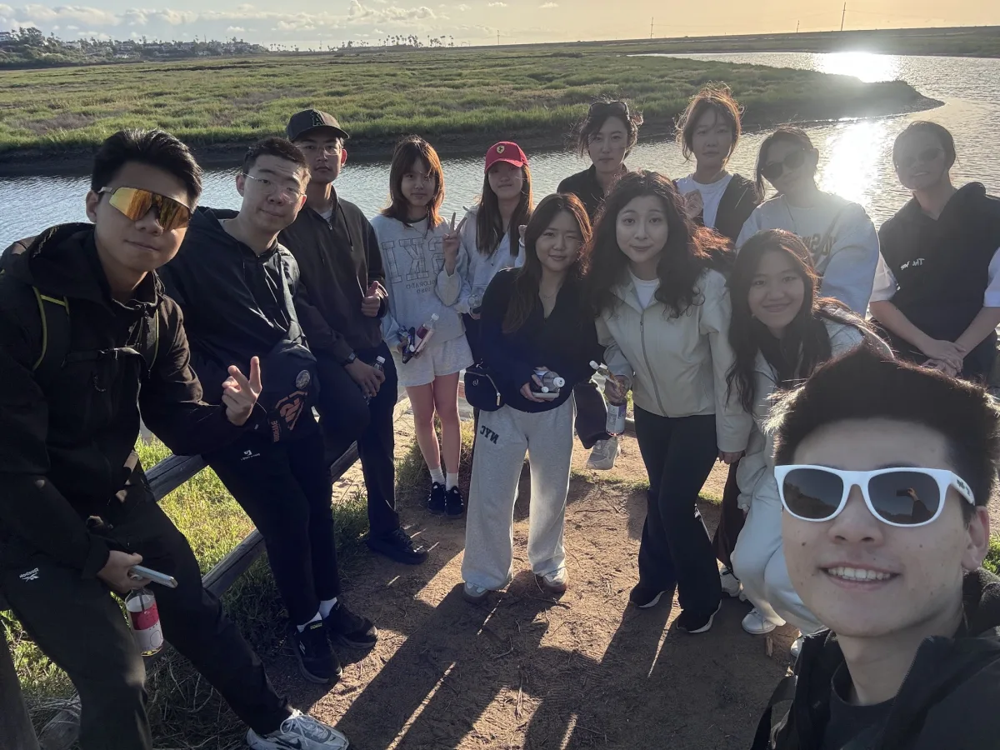
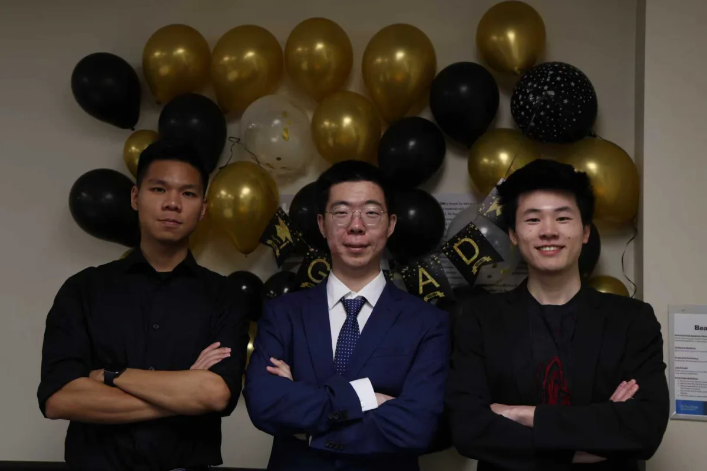

As a Career Development Program Team Officer for the Chinese Engineering Society, I help plan and run events that connect CES members with internship and full-time opportunities, while also building a tight officer team through regular bonding events.
Key Responsibilities
- Career Events: Helps plan and host career-development events, including resume workshops and networking nights, connecting students with internship and full-time opportunities.
- Team Building: Organizes officer bonding activities — team dinners, hikes, and rooftop hangouts — to keep the officer team collaborative and connected throughout the year.
Team Highlights
A few moments with the CES officer team outside of event planning.

Team Dinner

Rooftop Bonding

Officer Hike

Hiking by the Lagoon
